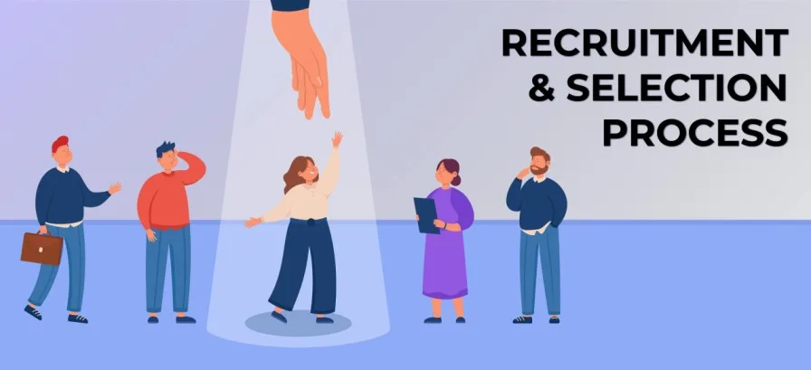
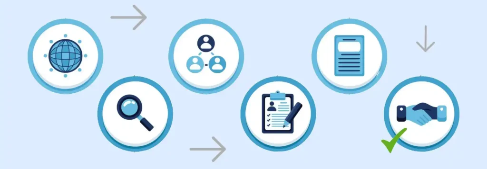

Expanded Nursing Uganda Explanation
Staff recruitment process should be reviewed through safe maternal and newborn assessment, early recognition of danger signs, respectful communication and timely referral. Connect the definition to vital signs, bleeding, fetal or newborn wellbeing, patient education and local protocol requirements.
01 Recruitment and Selection
Recruitment refers to the process of searching for prospective employees and stimulating them to apply for jobs in the organization .(Edwin B.Flippo)
Recruitment can also be defined as the process of developing a pool of potential employees in accordance with a human resource plan which an organization can depend on when it needs additional employees.
When a decision is made to recruit, the following are done,
- Job analysis is done which is the technique of studying a job to identify the skills, knowledge, experience and other requirements necessary to perform the job.
- Job descriptions are descriptions of the management position, covering the Job title, location and grading, Brief explanation on the purpose of the job, List of duties and responsibilities, Terms and conditions of employment & its position in the organization chart.
- Job/Hiring Specification describes the type of person who fits the job which will guide the recruitment officer to choose the best candidate. They include; Knowledge, skills and abilities, Educational qualifications, Work experience, Physical requirements of the job, if any, Personality requirements, where relevant
02 Sources for recruitment
- Internal Recruitment; Promotion from within(peer recruitment) and/or transfer of existing staff.
- External Recruitment;
- Employment Agencies and Consultants : Executive recruiters (headhunters) specialize in finding qualified candidates for specific positions.
- Campus Recruitment: Firms visit schools and colleges to conduct interviews and recruit candidates directly from educational institutions.
- Employee Referrals : Employees may recommend their relatives, friends, or acquaintances for job vacancies within the company.
- Unsolicited Applicants : Applicants who apply for jobs without the company advertising for vacancies. This can include individuals who submit their resumes through the company’s website or job boards/HR.
- The Internet: Companies advertise job openings on their websites, social media platforms (such as LinkedIn, WhatsApp, and Facebook), and job boards.
- Advertising in the Mass Media : Job vacancies are advertised through various mass media channels, including newspapers, magazines, posters, banners, and radio and television announcements.
03 Recruitment Process
The recruitment procedure involves the following steps:
- Vacancy Identification : Identifying the need for a new employee or replacement due to factors such as growth, turnover, or restructuring.
- Sourcing for Candidates: Advertising the job vacancy through various channels, such as job boards, company website, social media, and employee referrals.
- Collecting and Screening Applications : Receiving and reviewing applications from interested candidates. Screening applications to identify those that meet the minimum requirements and qualifications for the position.
- Appointment – Interviews , Selection & Placement : Scheduling interviews with shortlisted candidates to further assess their qualifications, skills, and fit for the role. Selecting the most suitable candidate based on the interview performance and other relevant factors. Extending a job offer to the selected candidate and negotiating the terms of employment.
- Induction : Providing the new employee with an orientation to the company, its culture, policies, and procedures. Introducing the new employee to their colleagues and work environment.
- Probation : Establishing a probationary period during which the new employee’s performance is evaluated to ensure they are meeting the company’s expectations and requirements.
04 Selection Process
It Involves mutual decision whereby the organization decides whether or not to make a job offer and the candidate decides whether or not to accept the job.
Steps in the Selection Process
- Completed Job Application : Candidates submit a job application form that provides information about their desired position and relevant qualifications.
- Initial Screening : A quick evaluation of the applicant’s resume and application form is conducted to assess their initial suitability for the role.
- Testing : Applicants may be required to take tests to measure their job skills, abilities, and aptitude. These tests can provide insights into their potential to learn and perform the job effectively.
- Background Investigation : The organization verifies the accuracy and truthfulness of the information provided by the applicant on their resume and application form.
- In-Depth Selection Interview : Face-to-face interviews are conducted to explore the applicant’s personality, attitude, and fit for the job and the company culture.
- Physical Examination : Some roles may require a physical examination to assess the applicant’s physical fitness and overall health.
- Job Offer : If the applicant successfully passes all stages of the selection process, the organization extends a job offer, outlining the terms and conditions of employment.
05 Appointment
An appointment is the act of formally selecting or assigning a person to a particular position or role.
Appointment also refers to the process of hiring an individual to fill a specific job position within an organization.
An appointment letter is a formal document issued by an organization to a selected candidate, confirming their appointment to a specific position.
It serves as a written agreement between the employer and the employee, outlining the terms and conditions of employment.
The appointment letter should clearly outline the following important information:
- Job Title: The specific title of the position that the candidate will hold.
- Responsibilities : A detailed description of the duties and responsibilities associated with the role.
- Duty Station : The location where the employee will be based to perform their job duties.
- Job Grade : The classification or level of the position within the organization’s structure.
- Benefits : A summary of the benefits and entitlements that come with the job, such as salary, leave allowances, medical insurance, and other perks.
- Contract Duration : The length of the employment contract, whether it is a fixed-term, temporary, or permanent position.
- Effective Date of Commencement : The date on which the employee is expected to start working in the role.
The newly appointed staff member should acknowledge and accept the terms and conditions of employment by signing the appointment letter and a formal employment contract.
- Fixed-Term Contract : A short-term appointment with a specific duration, normally ranging from 1 to 2 years, with the possibility of renewal upon mutual agreement.
- Temporary Appointment : A short-term appointment with a maximum duration of 3 months, intended for specific projects or tasks that require temporary staffing.
- Permanent and Pensionable Appointment : A long-term appointment with no fixed end date, offered to employees in the civil service or other organizations with established pension schemes. This type of appointment is usually terminated only upon retirement or under specific circumstances.
06 Induction and Orientation
Induction is an orientation programme aimed at introducing new employees and settling them in their new jobs .
Orientation and socialization programs are designed to help new employees fit into the organization smoothly and become productive members of the team.
These programs convey three types of information:
- General information about the daily routine activities : This includes information about the company’s work hours, dress code, break times, and other general policies and procedures.
- A review of the organization : This includes information about the company’s history, purpose, operations, products or services, and the expected contribution of the employee to the organization.
- Detailed presentation of the organization’s policies, rules, benefits, and brochure : This includes information about the company’s policies on topics such as workplace conduct, attendance, and leave, as well as information about the company’s benefits and perks.
Employee Concerns
New employees may have a number of concerns during the orientation and socialization process, including:
- Anxiety about the new environment and how they will perform in their job.
- Feelings of inadequacy , especially if they have less experience than other employees or if they are new to the industry.
- Uncertainty about how to get along with other employees and how to fit into the company culture.
- Personal and family problems that may affect their ability to adjust to the new job.
Solutions: Effective Socialization Programs:
Effective socialization programs can help to address these concerns by providing information, introducing new employees to their colleagues, and encouraging them to ask questions. These programs may also include opportunities for new employees to shadow experienced employees, participate in team-building activities, and receive feedback on their performance.
- Provide accurate and up-to-date information : New employees need to know what is expected of them and how to do their jobs effectively. Orientation programs should provide clear and concise information about the company’s policies, procedures, and goals.
- Introduce new employees to their colleagues : New employees need to feel like they are part of a team. Orientation programs should provide opportunities for new employees to meet their colleagues and learn about their roles and responsibilities.
- Encourage new employees to ask questions : New employees may have a lot of questions about their new jobs and the company. Orientation programs should encourage new employees to ask questions and provide them with the resources they need to find answers.
- Provide opportunities for new employees to shadow experienced employees: Shadowing experienced employees can help new employees learn the ropes and get a better understanding of their roles. Orientation programs should provide opportunities for new employees to shadow experienced employees for a period of time.
- Participate in team-building activities : Team-building activities can help new employees bond with their colleagues and feel like they are part of the team. Orientation programs should include team-building activities that are designed to help new employees get to know each other and work together effectively.
- Receive feedback on their performance : New employees need to know how they are performing in their jobs. Orientation programs should provide opportunities for new employees to receive feedback on their performance from their supervisors and colleagues.
07 Job Analysis
Click Here
08 Nursing Uganda Clinical Lens
Use Staff recruitment process as a practical nursing topic, not only a memorized definition. Translate theory into safe decisions, accountability, communication and service improvement.
- What to understand first: define staff recruitment process, identify the normal or expected pattern, then explain what changes when the patient is unwell.
- Why it matters in care: the nurse must recognize risk early, explain findings clearly, document accurately and know when to escalate.
- How to revise it: connect each point to assessment, nursing diagnosis or care problem, intervention, rationale and evaluation.
09 Assessment Guide
- The problem, stakeholders, available resources, policy requirements and ethical issues.
- Risks to patients, staff, confidentiality, quality, costs and continuity.
- Documentation, reporting lines, supervision and evaluation measures.
10 Nursing Priorities, Rationales and Outcomes
- Use evidence, policy and professional standards to guide action.
- Communicate clearly, document decisions and protect confidentiality.
- Evaluate whether the action improves safety, learning or service delivery.
The rationale for these priorities is patient safety: nursing actions should prevent deterioration, reduce discomfort, support recovery and create clear evidence for the next caregiver.
- Expected outcome: The plan is documented, realistic, ethical and improves patient care or learning outcomes.
11 Patient Teaching and Revision Check
- Explain staff recruitment process in simple language the patient or caregiver can repeat back.
- Teach warning signs, medicine or follow-up instructions, hygiene or lifestyle points where relevant.
- For exams, prepare a short answer using: definition, causes or risk factors, signs, assessment, management, complications and prevention.
- For ward practice, document baseline findings, actions taken, patient response and the plan for review.
Illustrations and Diagrams (5)


Related Video Lectures
Watch nursing lecture videos on YouTube for this topic. Opens in a new tab.
Watch on YouTubeExternal link: YouTube may use its own cookies and terms. Nursing Uganda is not affiliated with YouTube.